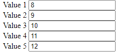

ДЗ №19
Обов'язкові завдання
Дано 10 рядків тексту «Hello!» у окремих div. При кліку на якийсь із них усі наступні повинні бути зафарбовані у
червоний колір.
Дано 5 елементів input. При введенні значення у якийсь із них необхідно автоматично заповнювати інші (усі
попередні у спадному порядку(кожен попередній має значення на 1 менше за наступний), усі наступні на 1 більше
(кожен наступне на 1 більше за попереднього))

Дано 5 випадковим чином згенерованих нумерованих списків з рандомними числами (кількість елементів у списку
випадкова від 1 до 10, елементи випадкові – від 1 до 100). При натисненні на кнопку нумеровані списки з парною
кількістю елементів зафарбувати у зелений колір, інші у червоний.
Дано 3 таблиці розмірності 3*3 з випадковими числами. Якщо відбувається клік на якійсь із клітинок, то до
відповідної таблиці додається червона рамка (спробуйте додати можливість відображення кількості кліків біля назви
таблиці з використанням відповідно доданого для цього атрибута).
Відображаємо картки товарів, які користувач може вибирати. Вибраний товар має зелену рамку (при кліку робити
toogle з класом вибраного елемента)
Дано список спортсменів. Потрібно сформувати список тих, які будуть брати участь у змаганні. При цьому є два
стовпці. В одному відображені всі спортсмени, в іншому – список тих, хто був вибраний. При натисканні на зелену
стрілку спортсмен переміщається у список для змагань. При натисканні на червону стрілку спортсмен переміщається у
загальний список.

Відобразити падаючий сніг. Сніжинка з’являється у верхній частині екрану (top =0) і з випадковою швидкістю
рухається вниз (у setInterval викликати метод, у якому додавати крок до top). Як тільки сніжинка досягає нижньої
частини екрану (top>maxTop) вона знову повинна з’явитись у верхній частині екрану (top=0).
Додаткові завдання
Задача 1
Ловля тараканів. Зображення тараканів з’являються в центрі контейнера і випадковим чином «розбігаються» у
випадкових напрямках. При кліку на зображенні таракана його рух припиняється і виводиться зображення сплячого
таракана.
Задача 2
У таблиці випадковим чином розташовуємо зайця. Користувач розміщує пастку. Заєць робить хід у випадковому
напрямку. Якщо заєць потрапив у пастку, то гру закінчено. Інакше пастка зникає з попередньої позиції і користувач
має можливість поставити пастку у іншій клітинці клікнувши на неї.
Задача 3
Гра «Знайти пару». Дано список зображень. Кожне із зображень двічі використовується як фон для картки, але воно
приховане. При кліку на 2 картки їх зображення відриваються. Якщо зображення однакові, то залишаємо їх відкритими.
Інакше через 1 секунду знову приховуємо.